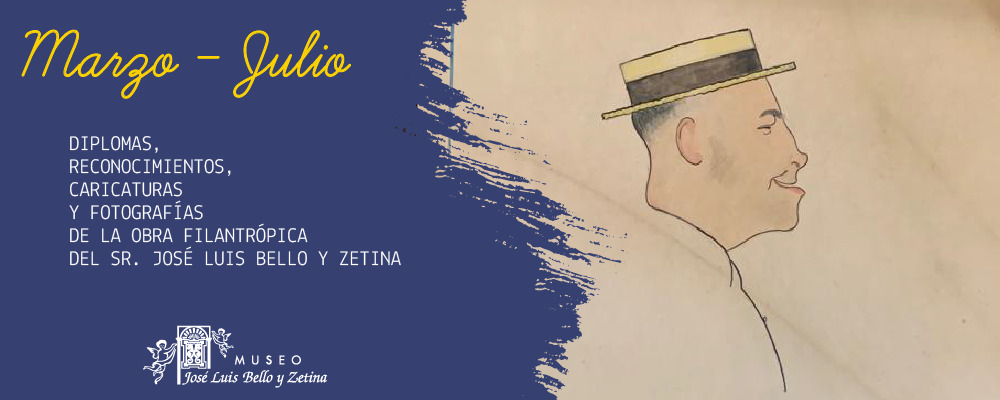

El Museo José Luis Bello y Zetina es una institución de beneficencia privada. Su riqueza principal es la colección pictórica de más de 160 obras en las cuales predomina la técnica al óleo, excelentes acuarelas, notable colección de miniaturas y una serie de grabados de gran importancia.
Contiene también bellísimas esculturas de bronce y tallas en madera de orden religioso.
Esta casa museo conserva su mobiliario original del siglo XIX de procedencia europea principalmente. Su acervo se enriquece con una serie de objetos de: plata, bronce, cristal, marfil, porcelana, etc.